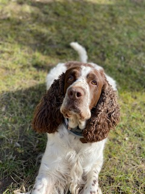

Maróty Mátyás vagyok, 20 éves. Budapesten lakom. Jelenleg az Corvinus egyetemet végzem inkább kevesebb, mint több sikerrel, annak ellenére, hogy erősen próbálkozom. Válogatott alpesi síelő voltam több évig. Igen, a Magyarországon élőknek a legjobb választás. A sport megtanított a kitartásra és a kitőzött célok eléréséért való küzdésre. Legalábbis ezt írom le a CV-m ben.
A síelésen kívül rengeteg más sportot próbáltam ki. Nagyon megfofott a tenisz és a szörf. Ezek váltak a hobbivá, a kedvenc szabadidős tevékenységgé.
Tanulásra való próbálkozások:
Kedvenc állataim:
Kedvenc állatom a kutya, a családomnak is van egy angol springer spánielje.
